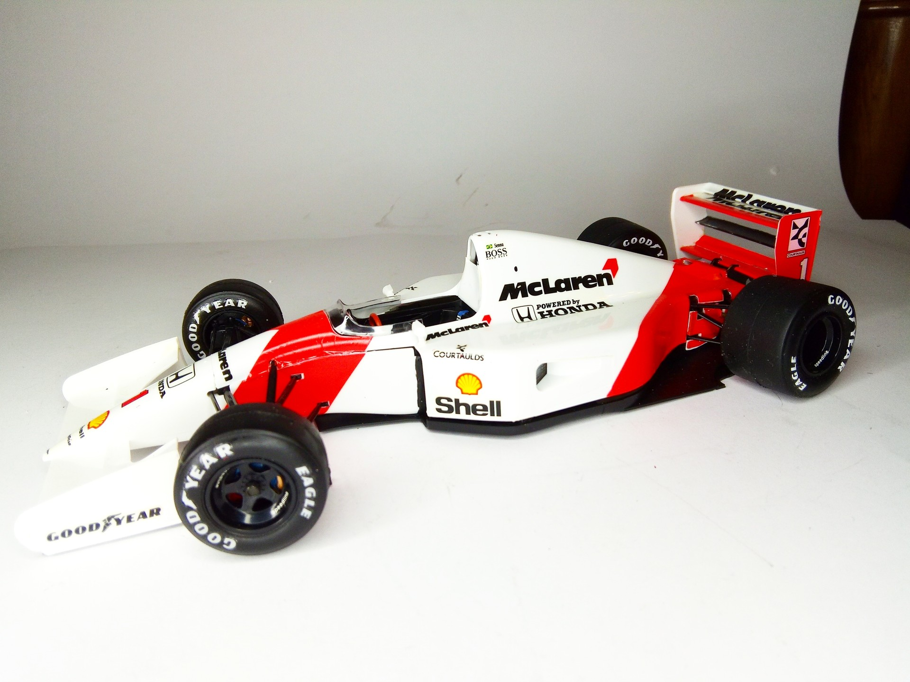
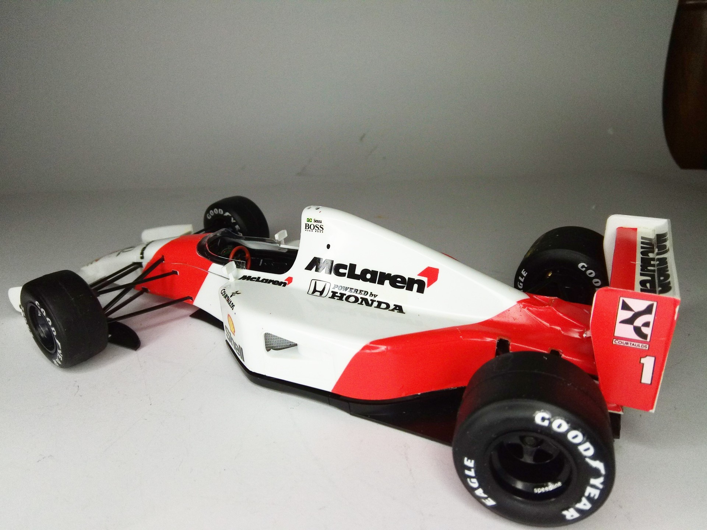

Auto e veicoli stradali · scale model archive
McLaren Honda MP4/7
McLaren Honda MP4/7 — Kit: Tamiya, Scale: 1/20. As raced by Ayrton Senna in 1992 #1/20 #Tamiya #McLaren #MP4/7

Photo gallery

English description
As raced by Ayrton Senna in 1992
#1/20 #Tamiya #McLaren #MP4/7
Descrizione italiana
Come corse Ayrton Senna nel 1992.